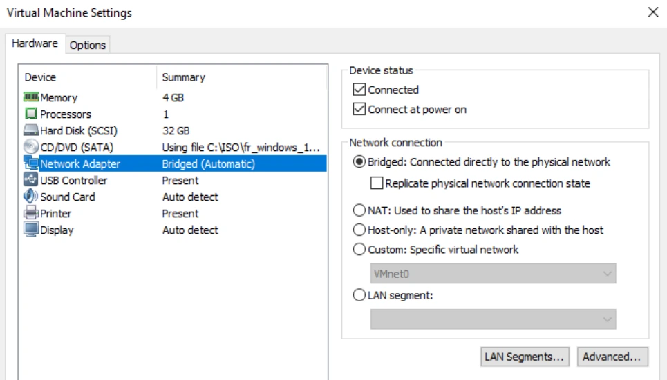
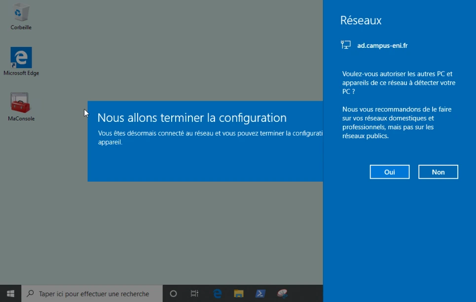
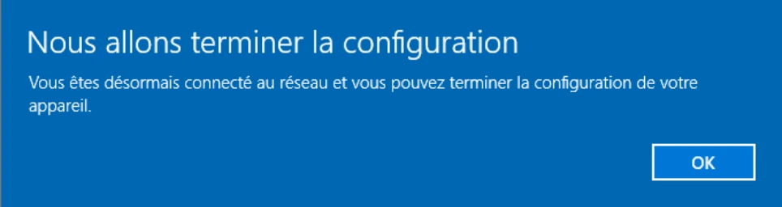
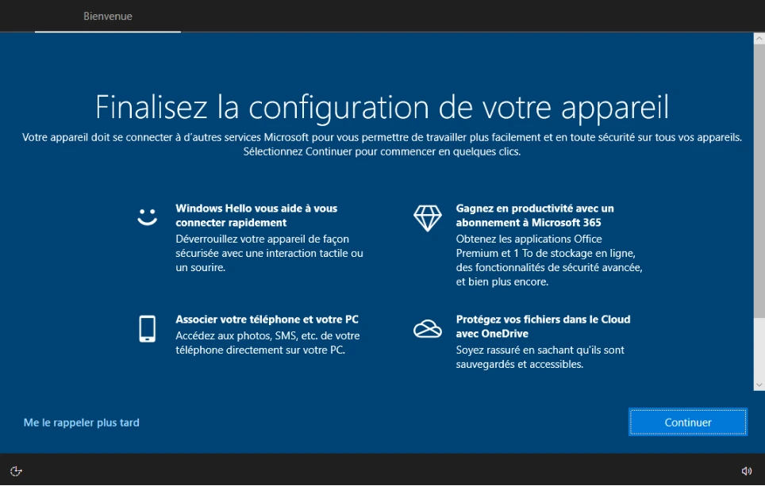
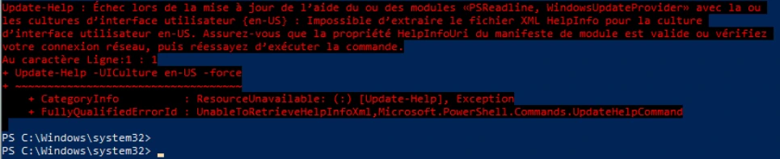

Transcription du document de formation. Les paragraphes, listes, tableaux et visuels isolés suivent l’ordre du document ; les aides pédagogiques sont séparées.
TP du Module 03 – Interagir avec Windows 10
Sur Discovery, à l’aide de PowerShell
Affichez l'aide complète de la cmdlet Get-Alias
Get-Help -Full Get-Alias
Un Get-Help Get-Alias -ShowWindow est aussi possible
Sur Win10-XX, à l'aide de PowerShell
Affichez l'aide complète de la cmdlet Get-Alias
Après avoir effectué la commande sur Win10-XX, nous remarquons qu’elle semble moins fournie. Les exemples ne sont pas présents. On observe surtout la présence d’une section REMARQUES à la fin, qui indique qu’il faut télécharger les fichiers d’aide.
o Vérifiez, à l'aide de votre interface graphique, que les mises à jour Windows
Update sont bien reportées à 35 jours au moins. Reportez-les le cas échéant.
Rechercher > Options avancées de Windows Update > Options avancées > Interrompre les mises à jour jusqu’à la date maximale
o Pour communiquer avec le serveur de mise à jour de l’aide, votre VM Win10-
XX aura besoin d'être connectée au switch virtuel Bridge
Dans WorkStation, xlic droit sur l’onglet de votre VM Win10-XX > Settings
Network Adapter
Cochez Bridged
La VM détecte un nouveau réseau.
Pour mettre en place l’emplacement réseau privé, cliquez sur Oui


Une connexion internet est découverte, Windows 10 en profite pour vous demander de terminer la configuration de votre profil utilisateur. Cliquer sur Me le rappeler plus tard
o Identifiez-vous auprès du serveur à l'aide de vos identifiants / mot de passe du
domaine
Pour mettre à jour les fichiers d’aide PowerShell, lancer une invite PowerShell en tant qu’administrateur.
Update-help
La mise à jour se lance et est symbolisée par une barre d’avancement comme ci-dessous.


Si la barre d’avancement n’apparaît pas, c’est que vous avez fait une erreur de syntaxe dans votre commande.
Au bout de quelques minutes, la mise à jour est terminée. Un message d’erreur peut éventuellement apparaître, vous indiquant une mise à jour impossible pour certains modules. Ceci n’est pas bloquant. Vous pouvez continuer le TP, cela correspond généralement à des modules qui ne sont pas installés sur votre ordinateur ou à des modules non disponibles dans la langue demandée.
Pour vérifier la bonne mise à jour de l’aide, effectuez la commande suivante sur votre VM Win10-xx :
Get-Help -Full Get-Alias
Vous devez obtenir l’aide complète (avec des exemples, des liens connexes …)
Une fois la mise à jour effectuée, rebasculez votre VM sur le switch Host-Only.
Get-Help Get-Help -Example
Voir l’exemple 8 de la commande précédente Get-Help
Get-Help about_*

o Affichez le résultat de cette cmdlet dans une fenêtre d'aide séparée
Get-Help about_Aliases -ShowWindow
Les alias configurés ne sont pas conservés si la session PowerShell est fermée. La section de l’aide qu’il faut consulter pour savoir comment les configurer est la section SAVING ALIASES
SAVING ALIASES
The aliases that you create are saved only in the current session. To use the aliases in a different session, add the alias to your Windows PowerShell profile. Or, use the Export-Alias cmdlet to save the aliases to a file.
For more information, type:
Get-Help about_Profiles
Get-Help about_History
[…]
MaximumHistoryCount
The $MaximumHistoryCount preference variable determines the maximum number of commands that PowerShell saves in the command history. The default value is 4096.
For example, the following command lowers the $MaximumHistoryCount to 100 commands:
$MaximumHistoryCount = 100
To apply the setting, restart PowerShell.
Selon le résultat de la commande précédente, la valeur par défaut contenue dans cette variable est 4096. Elle peut être modifiée grâce à la commande
$MaximumHistoryCount = nb